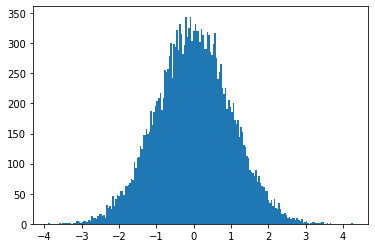

Literate programming
elisp, lisp, python, bash
Table of Contents
- 1. pyenv은 파이썬 버전을 다양하게 사용할 수 있다
- 2. virtualenv 프로젝트별로 패키지들의 충돌을 막아주기 위한 가상환경이다.
- 3. pyvenv-create를 이용해서 virtualenv를 새로 생성하려 했으나 제대로 작동이 안되었다;;
- 3.1. pyenv가 작동하는지부터 확인
- 3.2. pyvenv-create.el 소스코드를 보며 원인을 찾아보다 virtualenv 에서 에러코드를 발생하는 것을 발견
- 3.2.1. virtualenv 실행
- 3.2.2. TODO error code(에러를 새 버퍼에 띄우는데 바로 나타내는 방법은 없는걸까, 버퍼에 나타난 에러를 복사한후 소스코드 블럭안에 넣어놨다)
- 3.2.3. PATH쪽 확인
- 3.2.4. 구글링해보니 python@2 재설치로 해결했다는 걸 봄. 삭제하면 안된다는 글을 본것 같은데;; 포멧 각인가
- 3.2.5. virtualenv 실행
- 3.2.6. error code
- 3.2.7. 구글링..구글링..
- 3.2.8. 다시 실행해보니 제대로 작동;; 파이썬과 친해지려면 한참 멀었구나
- 3.2.9. TODO 정상 작동! 일단 해결했는데 python@2 버전은 설치 안해놔도 되나;;
- 3.2.10. env에 uiap가 정상적으로 생성되었고, pyvenv-workon실행시키니 minibuffer에 해당 env가 표시되는것도 확인.
- 3.2.11. TODO html로 export할때 RESULTS: 결과중 일부만 색상이나 밑줄등 바꾸려면 어떻게 해야할까?
- 4. 웹으로 확인차 export할 때 블럭마다 confirm을 묻는데 매번 no 쳐야했다.
- 5. install jupyter
- 6. anaconda 를 설치했으면 됐는데
1 pyenv은 파이썬 버전을 다양하게 사용할 수 있다
2 virtualenv 프로젝트별로 패키지들의 충돌을 막아주기 위한 가상환경이다.
pyenv의 목록에 virtualenv가 들어가기 때문에 pyenv를 먼저 설치
3 pyvenv-create를 이용해서 virtualenv를 새로 생성하려 했으나 제대로 작동이 안되었다;;
3.1 pyenv가 작동하는지부터 확인
잘 작동하는걸로 봐서는 다른 곳에 원인이 있는 것 같음
pyenv --help
Usage: pyenv <command> [<args>] Some useful pyenv commands are: --version Display the version of pyenv activate Activate virtual environment commands List all available pyenv commands deactivate Deactivate virtual environment exec Run an executable with the selected Python version global Set or show the global Python version(s) help Display help for a command hooks List hook scripts for a given pyenv command init Configure the shell environment for pyenv install Install a Python version using python-build local Set or show the local application-specific Python version(s) prefix Display prefix for a Python version rehash Rehash pyenv shims (run this after installing executables) root Display the root directory where versions and shims are kept shell Set or show the shell-specific Python version shims List existing pyenv shims uninstall Uninstall a specific Python version version Show the current Python version(s) and its origin version-file Detect the file that sets the current pyenv version version-name Show the current Python version version-origin Explain how the current Python version is set versions List all Python versions available to pyenv virtualenv Create a Python virtualenv using the pyenv-virtualenv plugin virtualenv-delete Uninstall a specific Python virtualenv virtualenv-init Configure the shell environment for pyenv-virtualenv virtualenv-prefix Display real_prefix for a Python virtualenv version virtualenvs List all Python virtualenvs found in `$PYENV_ROOT/versions/*'. whence List all Python versions that contain the given executable which Display the full path to an executable See `pyenv help <command>' for information on a specific command. For full documentation, see: https://github.com/pyenv/pyenv#readme
pyenv virtualenvs
3.8.5/envs/emacs (created from /Users/sroh/.pyenv/versions/3.8.5) 3.8.5/envs/opencv (created from /Users/sroh/.pyenv/versions/3.8.5) emacs (created from /Users/sroh/.pyenv/versions/3.8.5) opencv (created from /Users/sroh/.pyenv/versions/3.8.5) test-anaconda (created from /usr/local/Cellar/python@3.8/3.8.5/Frameworks/Python.framework/Versions/3.8) uiap (created from /usr/local/Cellar/python@3.8/3.8.5/Frameworks/Python.framework/Versions/3.8)
3.2 pyvenv-create.el 소스코드를 보며 원인을 찾아보다 virtualenv 에서 에러코드를 발생하는 것을 발견
3.2.1 virtualenv 실행
virtualenv
3.2.2 TODO error code(에러를 새 버퍼에 띄우는데 바로 나타내는 방법은 없는걸까, 버퍼에 나타난 에러를 복사한후 소스코드 블럭안에 넣어놨다)
- 파이썬 버전이 2.7.16 을 찾네..
- 2.7.16은 맥에 기본적으로 깔려있는 버전이고, 현재 깔아놓은 파이썬 버전은 3.8.5 이다. 구글링..구글링..구글링..
ERROR:root:code for hash md5 was not found.
Traceback (most recent call last):
File "/usr/local/Cellar/python@2/2.7.16/Frameworks/Python.framework/Versions/2.7/lib/python2.7/hashlib.py", line 147, in <module>
globals()[__func_name] = __get_hash(__func_name)
File "/usr/local/Cellar/python@2/2.7.16/Frameworks/Python.framework/Versions/2.7/lib/python2.7/hashlib.py", line 97, in __get_builtin_constructor
raise ValueError('unsupported hash type ' + name)
ValueError: unsupported hash type md5
ERROR:root:code for hash sha1 was not found.
Traceback (most recent call last):
File "/usr/local/Cellar/python@2/2.7.16/Frameworks/Python.framework/Versions/2.7/lib/python2.7/hashlib.py", line 147, in <module>
globals()[__func_name] = __get_hash(__func_name)
File "/usr/local/Cellar/python@2/2.7.16/Frameworks/Python.framework/Versions/2.7/lib/python2.7/hashlib.py", line 97, in __get_builtin_constructor
raise ValueError('unsupported hash type ' + name)
ValueError: unsupported hash type sha1
ERROR:root:code for hash sha224 was not found.
Traceback (most recent call last):
File "/usr/local/Cellar/python@2/2.7.16/Frameworks/Python.framework/Versions/2.7/lib/python2.7/hashlib.py", line 147, in <module>
globals()[__func_name] = __get_hash(__func_name)
File "/usr/local/Cellar/python@2/2.7.16/Frameworks/Python.framework/Versions/2.7/lib/python2.7/hashlib.py", line 97, in __get_builtin_constructor
raise ValueError('unsupported hash type ' + name)
ValueError: unsupported hash type sha224
ERROR:root:code for hash sha256 was not found.
Traceback (most recent call last):
File "/usr/local/Cellar/python@2/2.7.16/Frameworks/Python.framework/Versions/2.7/lib/python2.7/hashlib.py", line 147, in <module>
globals()[__func_name] = __get_hash(__func_name)
File "/usr/local/Cellar/python@2/2.7.16/Frameworks/Python.framework/Versions/2.7/lib/python2.7/hashlib.py", line 97, in __get_builtin_constructor
raise ValueError('unsupported hash type ' + name)
ValueError: unsupported hash type sha256
ERROR:root:code for hash sha384 was not found.
Traceback (most recent call last):
File "/usr/local/Cellar/python@2/2.7.16/Frameworks/Python.framework/Versions/2.7/lib/python2.7/hashlib.py", line 147, in <module>
globals()[__func_name] = __get_hash(__func_name)
File "/usr/local/Cellar/python@2/2.7.16/Frameworks/Python.framework/Versions/2.7/lib/python2.7/hashlib.py", line 97, in __get_builtin_constructor
raise ValueError('unsupported hash type ' + name)
ValueError: unsupported hash type sha384
ERROR:root:code for hash sha512 was not found.
Traceback (most recent call last):
File "/usr/local/Cellar/python@2/2.7.16/Frameworks/Python.framework/Versions/2.7/lib/python2.7/hashlib.py", line 147, in <module>
globals()[__func_name] = __get_hash(__func_name)
File "/usr/local/Cellar/python@2/2.7.16/Frameworks/Python.framework/Versions/2.7/lib/python2.7/hashlib.py", line 97, in __get_builtin_constructor
raise ValueError('unsupported hash type ' + name)
ValueError: unsupported hash type sha512
3.2.3 PATH쪽 확인
(require 'pyvenv) (pyvenv-mode 1) ;; (pyvenv-create "uiap" "python3.8.5") (exec-path)
("/Users/sroh/.pyenv/versions/uiap/bin" "/Users/sroh/.pyenv/shims" "/usr/local/opt/python@3.8/libexec/bin" "/usr/local/bin" "/usr/bin" "/bin" "/usr/sbin" "/sbin" "/usr/local/Cellar/emacs-head@28/28.0.50_1/libexec/emacs/28.0.50/x86_64-apple-darwin19.6.0")
which python
/Users/sroh/.pyenv/versions/uiap/bin/python
3.2.4 구글링해보니 python@2 재설치로 해결했다는 걸 봄. 삭제하면 안된다는 글을 본것 같은데;; 포멧 각인가
brew uninstall python@2
3.2.5 virtualenv 실행
virtualenv
3.2.6 error code
/usr/local/Cellar/pyenv/1.2.20/libexec/pyenv-exec: /usr/local/bin/virtualenv: /usr/local/opt/python@2/bin/python2.7: bad interpreter: No such file or directory /usr/local/Cellar/pyenv/1.2.20/libexec/pyenv-exec: line 48: /usr/local/bin/virtualenv: Undefined error: 0
3.2.7 구글링..구글링..
virtualenv를 재설치 해보라네
pip uninstall virtualenv
pip install virtualenv
Requirement already satisfied: virtualenv in /Users/sroh/.pyenv/versions/uiap/lib/python3.8/site-packages (20.0.31) Requirement already satisfied: filelock<4,>=3.0.0 in /Users/sroh/.pyenv/versions/uiap/lib/python3.8/site-packages (from virtualenv) (3.0.12) Requirement already satisfied: distlib<1,>=0.3.1 in /Users/sroh/.pyenv/versions/uiap/lib/python3.8/site-packages (from virtualenv) (0.3.1) Requirement already satisfied: appdirs<2,>=1.4.3 in /Users/sroh/.pyenv/versions/uiap/lib/python3.8/site-packages (from virtualenv) (1.4.4) Requirement already satisfied: six<2,>=1.9.0 in /Users/sroh/.pyenv/versions/uiap/lib/python3.8/site-packages (from virtualenv) (1.15.0)
3.2.8 다시 실행해보니 제대로 작동;; 파이썬과 친해지려면 한참 멀었구나
virtualenv --version
virtualenv 20.0.31 from /Users/sroh/.pyenv/versions/uiap/lib/python3.8/site-packages/virtualenv/__init__.py
3.2.9 TODO 정상 작동! 일단 해결했는데 python@2 버전은 설치 안해놔도 되나;;
(require 'pyvenv) (pyvenv-mode 1) (pyvenv-create "uiap" "python3.8.5")
pyenv virtualenvs
3.8.5/envs/emacs (created from /Users/sroh/.pyenv/versions/3.8.5) 3.8.5/envs/opencv (created from /Users/sroh/.pyenv/versions/3.8.5) emacs (created from /Users/sroh/.pyenv/versions/3.8.5) opencv (created from /Users/sroh/.pyenv/versions/3.8.5) test-anaconda (created from /usr/local/Cellar/python@3.8/3.8.5/Frameworks/Python.framework/Versions/3.8) uiap (created from /usr/local/Cellar/python@3.8/3.8.5/Frameworks/Python.framework/Versions/3.8)
3.2.10 env에 uiap가 정상적으로 생성되었고, pyvenv-workon실행시키니 minibuffer에 해당 env가 표시되는것도 확인.
3.8.5/envs/emacs (created from /Users/sroh/.pyenv/versions/3.8.5) 3.8.5/envs/opencv (created from /Users/sroh/.pyenv/versions/3.8.5) emacs (created from /Users/sroh/.pyenv/versions/3.8.5) opencv (created from /Users/sroh/.pyenv/versions/3.8.5) uiap (created from /usr/local/Cellar/python@3.8/3.8.5/Frameworks/Python.framework/Versions/3.8)
(pyvenv-workon "uiap")
3.2.11 TODO html로 export할때 RESULTS: 결과중 일부만 색상이나 밑줄등 바꾸려면 어떻게 해야할까?
4 웹으로 확인차 export할 때 블럭마다 confirm을 묻는데 매번 no 쳐야했다.
현재 해결된 문제의 코드를 다시 evaluate하면 다른 메세지를 나타내기 때문에 no를 해야했는데 ob-core.el 파일을 읽어보니 해결책이 있었다.
4.1 The variable `org-babel-confirm-evaluate-answer-no' is used by
the async export process, which requires a non-interactive environment, to override this check."
(setq org-babel-confirm-evaluate-answer-no t)
5 install jupyter
5.1 uiap 활성화(pyvenv-workon -> uiap)
5.2 version 확인
python -V
5.3 pip 업그레이드 (해야하나;;)
python3 -m pip install --upgrade pip
5.4 최신버전이라는군. jupyter 설치
python3 -m pip install jupyter
Requirement already satisfied: jupyter in /Users/sroh/.pyenv/versions/uiap/lib/python3.8/site-packages (1.0.0) Requirement already satisfied: qtconsole in /Users/sroh/.pyenv/versions/uiap/lib/python3.8/site-packages (from jupyter) (4.7.7) Requirement already satisfied: ipykernel in /Users/sroh/.pyenv/versions/uiap/lib/python3.8/site-packages (from jupyter) (5.3.4) Requirement already satisfied: jupyter-console in /Users/sroh/.pyenv/versions/uiap/lib/python3.8/site-packages (from jupyter) (6.2.0) Requirement already satisfied: ipywidgets in /Users/sroh/.pyenv/versions/uiap/lib/python3.8/site-packages (from jupyter) (7.5.1) Requirement already satisfied: notebook in /Users/sroh/.pyenv/versions/uiap/lib/python3.8/site-packages (from jupyter) (6.1.3) Requirement already satisfied: nbconvert in /Users/sroh/.pyenv/versions/uiap/lib/python3.8/site-packages (from jupyter) (5.6.1) Requirement already satisfied: traitlets in /Users/sroh/.pyenv/versions/uiap/lib/python3.8/site-packages (from qtconsole->jupyter) (5.0.3) Requirement already satisfied: pyzmq>=17.1 in /Users/sroh/.pyenv/versions/uiap/lib/python3.8/site-packages (from qtconsole->jupyter) (19.0.2) Requirement already satisfied: pygments in /Users/sroh/.pyenv/versions/uiap/lib/python3.8/site-packages (from qtconsole->jupyter) (2.6.1) Requirement already satisfied: jupyter-client>=4.1 in /Users/sroh/.pyenv/versions/uiap/lib/python3.8/site-packages (from qtconsole->jupyter) (6.1.7) Requirement already satisfied: ipython-genutils in /Users/sroh/.pyenv/versions/uiap/lib/python3.8/site-packages (from qtconsole->jupyter) (0.2.0) Requirement already satisfied: jupyter-core in /Users/sroh/.pyenv/versions/uiap/lib/python3.8/site-packages (from qtconsole->jupyter) (4.6.3) Requirement already satisfied: qtpy in /Users/sroh/.pyenv/versions/uiap/lib/python3.8/site-packages (from qtconsole->jupyter) (1.9.0) Requirement already satisfied: ipython>=5.0.0 in /Users/sroh/.pyenv/versions/uiap/lib/python3.8/site-packages (from ipykernel->jupyter) (7.18.1) Requirement already satisfied: tornado>=4.2 in /Users/sroh/.pyenv/versions/uiap/lib/python3.8/site-packages (from ipykernel->jupyter) (6.0.4) Requirement already satisfied: appnope; platform_system == "Darwin" in /Users/sroh/.pyenv/versions/uiap/lib/python3.8/site-packages (from ipykernel->jupyter) (0.1.0) Requirement already satisfied: prompt-toolkit!=3.0.0,!=3.0.1,<3.1.0,>=2.0.0 in /Users/sroh/.pyenv/versions/uiap/lib/python3.8/site-packages (from jupyter-console->jupyter) (3.0.7) Requirement already satisfied: widgetsnbextension~=3.5.0 in /Users/sroh/.pyenv/versions/uiap/lib/python3.8/site-packages (from ipywidgets->jupyter) (3.5.1) Requirement already satisfied: nbformat>=4.2.0 in /Users/sroh/.pyenv/versions/uiap/lib/python3.8/site-packages (from ipywidgets->jupyter) (5.0.7) Requirement already satisfied: argon2-cffi in /Users/sroh/.pyenv/versions/uiap/lib/python3.8/site-packages (from notebook->jupyter) (20.1.0) Requirement already satisfied: jinja2 in /Users/sroh/.pyenv/versions/uiap/lib/python3.8/site-packages (from notebook->jupyter) (2.11.2) Requirement already satisfied: terminado>=0.8.3 in /Users/sroh/.pyenv/versions/uiap/lib/python3.8/site-packages (from notebook->jupyter) (0.8.3) Requirement already satisfied: Send2Trash in /Users/sroh/.pyenv/versions/uiap/lib/python3.8/site-packages (from notebook->jupyter) (1.5.0) Requirement already satisfied: prometheus-client in /Users/sroh/.pyenv/versions/uiap/lib/python3.8/site-packages (from notebook->jupyter) (0.8.0) Requirement already satisfied: pandocfilters>=1.4.1 in /Users/sroh/.pyenv/versions/uiap/lib/python3.8/site-packages (from nbconvert->jupyter) (1.4.2) Requirement already satisfied: entrypoints>=0.2.2 in /Users/sroh/.pyenv/versions/uiap/lib/python3.8/site-packages (from nbconvert->jupyter) (0.3) Requirement already satisfied: defusedxml in /Users/sroh/.pyenv/versions/uiap/lib/python3.8/site-packages (from nbconvert->jupyter) (0.6.0) Requirement already satisfied: testpath in /Users/sroh/.pyenv/versions/uiap/lib/python3.8/site-packages (from nbconvert->jupyter) (0.4.4) Requirement already satisfied: mistune<2,>=0.8.1 in /Users/sroh/.pyenv/versions/uiap/lib/python3.8/site-packages (from nbconvert->jupyter) (0.8.4) Requirement already satisfied: bleach in /Users/sroh/.pyenv/versions/uiap/lib/python3.8/site-packages (from nbconvert->jupyter) (3.1.5) Requirement already satisfied: python-dateutil>=2.1 in /Users/sroh/.pyenv/versions/uiap/lib/python3.8/site-packages (from jupyter-client>=4.1->qtconsole->jupyter) (2.8.1) Requirement already satisfied: pexpect>4.3; sys_platform != "win32" in /Users/sroh/.pyenv/versions/uiap/lib/python3.8/site-packages (from ipython>=5.0.0->ipykernel->jupyter) (4.8.0) Requirement already satisfied: setuptools>=18.5 in /Users/sroh/.pyenv/versions/uiap/lib/python3.8/site-packages (from ipython>=5.0.0->ipykernel->jupyter) (49.6.0) Requirement already satisfied: decorator in /Users/sroh/.pyenv/versions/uiap/lib/python3.8/site-packages (from ipython>=5.0.0->ipykernel->jupyter) (4.4.2) Requirement already satisfied: jedi>=0.10 in /Users/sroh/.pyenv/versions/uiap/lib/python3.8/site-packages (from ipython>=5.0.0->ipykernel->jupyter) (0.17.2) Requirement already satisfied: backcall in /Users/sroh/.pyenv/versions/uiap/lib/python3.8/site-packages (from ipython>=5.0.0->ipykernel->jupyter) (0.2.0) Requirement already satisfied: pickleshare in /Users/sroh/.pyenv/versions/uiap/lib/python3.8/site-packages (from ipython>=5.0.0->ipykernel->jupyter) (0.7.5) Requirement already satisfied: wcwidth in /Users/sroh/.pyenv/versions/uiap/lib/python3.8/site-packages (from prompt-toolkit!=3.0.0,!=3.0.1,<3.1.0,>=2.0.0->jupyter-console->jupyter) (0.2.5) Requirement already satisfied: jsonschema!=2.5.0,>=2.4 in /Users/sroh/.pyenv/versions/uiap/lib/python3.8/site-packages (from nbformat>=4.2.0->ipywidgets->jupyter) (3.2.0) Requirement already satisfied: six in /Users/sroh/.pyenv/versions/uiap/lib/python3.8/site-packages (from argon2-cffi->notebook->jupyter) (1.15.0) Requirement already satisfied: cffi>=1.0.0 in /Users/sroh/.pyenv/versions/uiap/lib/python3.8/site-packages (from argon2-cffi->notebook->jupyter) (1.14.2) Requirement already satisfied: MarkupSafe>=0.23 in /Users/sroh/.pyenv/versions/uiap/lib/python3.8/site-packages (from jinja2->notebook->jupyter) (1.1.1) Requirement already satisfied: ptyprocess; os_name != "nt" in /Users/sroh/.pyenv/versions/uiap/lib/python3.8/site-packages (from terminado>=0.8.3->notebook->jupyter) (0.6.0) Requirement already satisfied: webencodings in /Users/sroh/.pyenv/versions/uiap/lib/python3.8/site-packages (from bleach->nbconvert->jupyter) (0.5.1) Requirement already satisfied: packaging in /Users/sroh/.pyenv/versions/uiap/lib/python3.8/site-packages (from bleach->nbconvert->jupyter) (20.4) Requirement already satisfied: parso<0.8.0,>=0.7.0 in /Users/sroh/.pyenv/versions/uiap/lib/python3.8/site-packages (from jedi>=0.10->ipython>=5.0.0->ipykernel->jupyter) (0.7.1) Requirement already satisfied: attrs>=17.4.0 in /Users/sroh/.pyenv/versions/uiap/lib/python3.8/site-packages (from jsonschema!=2.5.0,>=2.4->nbformat>=4.2.0->ipywidgets->jupyter) (20.2.0) Requirement already satisfied: pyrsistent>=0.14.0 in /Users/sroh/.pyenv/versions/uiap/lib/python3.8/site-packages (from jsonschema!=2.5.0,>=2.4->nbformat>=4.2.0->ipywidgets->jupyter) (0.16.0) Requirement already satisfied: pycparser in /Users/sroh/.pyenv/versions/uiap/lib/python3.8/site-packages (from cffi>=1.0.0->argon2-cffi->notebook->jupyter) (2.20) Requirement already satisfied: pyparsing>=2.0.2 in /Users/sroh/.pyenv/versions/uiap/lib/python3.8/site-packages (from packaging->bleach->nbconvert->jupyter) (2.4.7)
5.5 ipython 테스트
ipython -V
7.18.1
5.6 org-babel 테스트
print("hello world")
%matplotlib inline import matplotlib.pyplot as plt import numpy as np
5.7 matplotlib 설치
pip install matplotlib
%matplotlib inline import matplotlib.pyplot as plt import numpy as np
plt.hist(np.random.randn(20000), bins=200)
(array([ 1., 0., 0., 0., 0., 0., 0., 1., 0., 2., 2., 2., 1., 1., 1., 0., 1., 2., 4., 4., 3., 2., 3., 5., 5., 3., 7., 4., 13., 9., 9., 8., 13., 17., 16., 13., 15., 10., 32., 26., 30., 25., 47., 30., 41., 48., 46., 55., 54., 48., 62., 63., 65., 68., 75., 73., 103., 93., 110., 111., 130., 124., 148., 147., 157., 150., 152., 187., 164., 185., 195., 204., 209., 218., 189., 209., 255., 252., 257., 279., 300., 243., 299., 294., 322., 288., 332., 316., 282., 297., 343., 311., 326., 344., 303., 321., 332., 321., 321., 302., 323., 314., 290., 291., 319., 314., 285., 281., 298., 317., 276., 241., 252., 265., 225., 215., 226., 191., 205., 194., 185., 200., 173., 165., 173., 144., 161., 153., 131., 127., 113., 109., 89., 86., 84., 79., 90., 70., 80., 67., 62., 61., 55., 54., 40., 34., 40., 30., 41., 26., 25., 34., 25., 17., 17., 18., 14., 10., 12., 8., 9., 9., 6., 9., 6., 5., 8., 2., 3., 4., 2., 0., 1., 3., 3., 2., 2., 1., 2., 3., 3., 0., 0., 1., 0., 1., 0., 0., 0., 0., 0., 0., 0., 0., 0., 0., 0., 0., 0., 1.]), array([-3.89293244, -3.85215946, -3.81138648, -3.7706135 , -3.72984052, -3.68906753, -3.64829455, -3.60752157, -3.56674859, -3.52597561, -3.48520263, -3.44442964, -3.40365666, -3.36288368, -3.3221107 , -3.28133772, -3.24056473, -3.19979175, -3.15901877, -3.11824579, -3.07747281, -3.03669983, -2.99592684, -2.95515386, -2.91438088, -2.8736079 , -2.83283492, -2.79206194, -2.75128895, -2.71051597, -2.66974299, -2.62897001, -2.58819703, -2.54742405, -2.50665106, -2.46587808, -2.4251051 , -2.38433212, -2.34355914, -2.30278615, -2.26201317, -2.22124019, -2.18046721, -2.13969423, -2.09892125, -2.05814826, -2.01737528, -1.9766023 , -1.93582932, -1.89505634, -1.85428336, -1.81351037, -1.77273739, -1.73196441, -1.69119143, -1.65041845, -1.60964546, -1.56887248, -1.5280995 , -1.48732652, -1.44655354, -1.40578056, -1.36500757, -1.32423459, -1.28346161, -1.24268863, -1.20191565, -1.16114267, -1.12036968, -1.0795967 , -1.03882372, -0.99805074, -0.95727776, -0.91650477, -0.87573179, -0.83495881, -0.79418583, -0.75341285, -0.71263987, -0.67186688, -0.6310939 , -0.59032092, -0.54954794, -0.50877496, -0.46800198, -0.42722899, -0.38645601, -0.34568303, -0.30491005, -0.26413707, -0.22336408, -0.1825911 , -0.14181812, -0.10104514, -0.06027216, -0.01949918, 0.02127381, 0.06204679, 0.10281977, 0.14359275, 0.18436573, 0.22513871, 0.2659117 , 0.30668468, 0.34745766, 0.38823064, 0.42900362, 0.46977661, 0.51054959, 0.55132257, 0.59209555, 0.63286853, 0.67364151, 0.7144145 , 0.75518748, 0.79596046, 0.83673344, 0.87750642, 0.9182794 , 0.95905239, 0.99982537, 1.04059835, 1.08137133, 1.12214431, 1.1629173 , 1.20369028, 1.24446326, 1.28523624, 1.32600922, 1.3667822 , 1.40755519, 1.44832817, 1.48910115, 1.52987413, 1.57064711, 1.61142009, 1.65219308, 1.69296606, 1.73373904, 1.77451202, 1.815285 , 1.85605799, 1.89683097, 1.93760395, 1.97837693, 2.01914991, 2.05992289, 2.10069588, 2.14146886, 2.18224184, 2.22301482, 2.2637878 , 2.30456078, 2.34533377, 2.38610675, 2.42687973, 2.46765271, 2.50842569, 2.54919868, 2.58997166, 2.63074464, 2.67151762, 2.7122906 , 2.75306358, 2.79383657, 2.83460955, 2.87538253, 2.91615551, 2.95692849, 2.99770147, 3.03847446, 3.07924744, 3.12002042, 3.1607934 , 3.20156638, 3.24233937, 3.28311235, 3.32388533, 3.36465831, 3.40543129, 3.44620427, 3.48697726, 3.52775024, 3.56852322, 3.6092962 , 3.65006918, 3.69084216, 3.73161515, 3.77238813, 3.81316111, 3.85393409, 3.89470707, 3.93548006, 3.97625304, 4.01702602, 4.057799 , 4.09857198, 4.13934496, 4.18011795, 4.22089093, 4.26166391]), <BarContainer object of 200 artists>)

6 anaconda 를 설치했으면 됐는데
6.1 install 가능한 버전 확인
pyenv install -l
6.2 새로 가상환경을 만들고 anaconda를 설치하자
6.2.1 virtualenvs 확인
pyenv virtualenvs
6.2.2 잠깐 왜
(created from /usr/local/Cellar/python@3.8/3.8.5/Frameworks/Python.framework/Versions/3.8) 이지?
6.2.3 pyvenv.el을 보니 exec-path를 참조한다고 해 있어서 Users/sroh.pyenv/shims 을 추가
6.2.4 M-x pyvenv-create 선택 후 test-anaconda로 이름을 설정하고 python 선택
created virtual environment CPython3.8.5.final.0-64 in 1074ms
creator CPython3Posix(dest=/Users/sroh/.pyenv/versions/test-anaconda, clear=False, global=False)
seeder FromAppData(download=False, pip=bundle, setuptools=bundle, wheel=bundle, via=copy, app_data_dir=/Users/sroh/Library/Application Support/virtualenv)
added seed packages: pip==20.2.2, setuptools==49.6.0, wheel==0.35.1
activators BashActivator,CShellActivator,FishActivator,PowerShellActivator,PythonActivator,XonshActivator